Фотогалерея
Про галерею
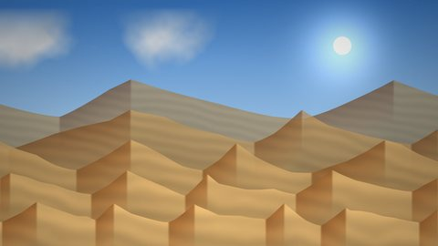
Дванадцять пустельних краєвидів — Сахара, Наміб, Атакама, Гобі та Олешківські піски. Оригінали 1920×1080, мініатюри 480×270.Натисніть мініатюру — зображення відкриється у збільшеному вигляді (лайтбокс), гортайте стрілками ← → або клавіатурою. Посилання «Повний розмір» веде на окрему сторінку перегляду з кнопками «Назад» і «Вперед».
Мініатюри
| 01Ерг: море барханів Сахари | 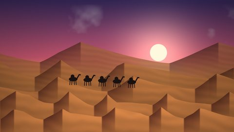 02Захід сонця й караван |
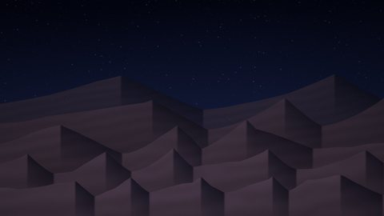 03Зоряна ніч над дюнами |
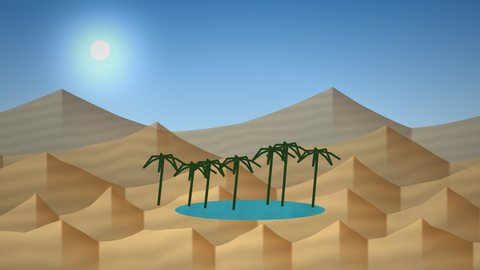 04Оаза з фініковими пальмами |
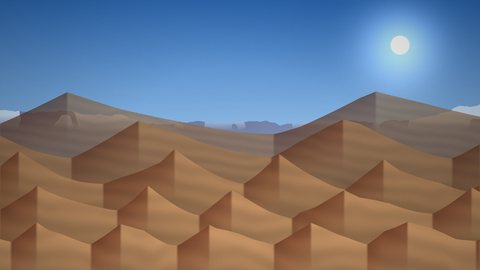 05Атакама: сухе плато під Андами |
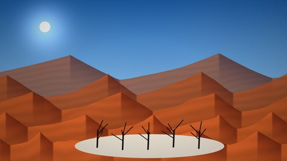 06Намібія: червоні дюни Соссусвлей |
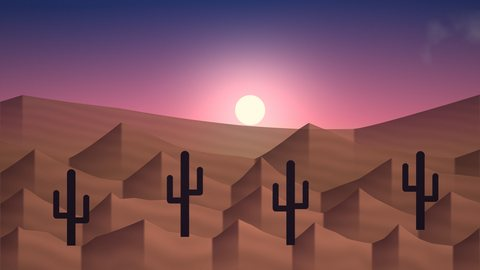 07Сонорська пустеля й кактуси сагуаро |
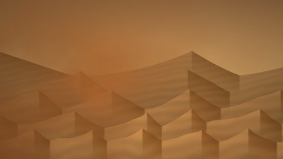 08Піщана буря насувається |
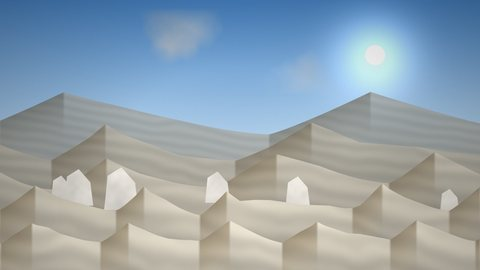 09Біла пустеля Єгипту |
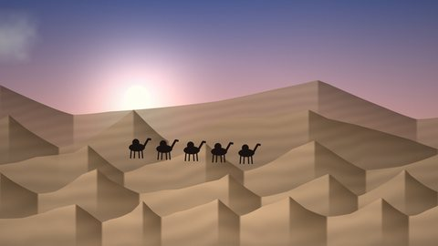 10Гобі: верблюди на світанку |
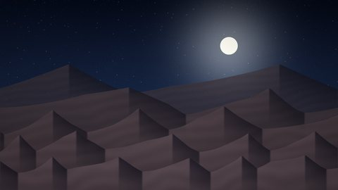 11Місяць над Аравійськими пісками |
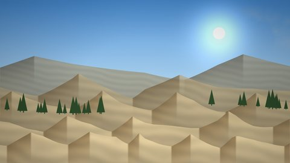 12Олешківські піски — українська «пустеля» |
Формат: JPEG, 1920×1080 (Full HD), до 400 КБ кожен файл; мініатюри 480×270. Усі зображення — власна процедурна графіка.